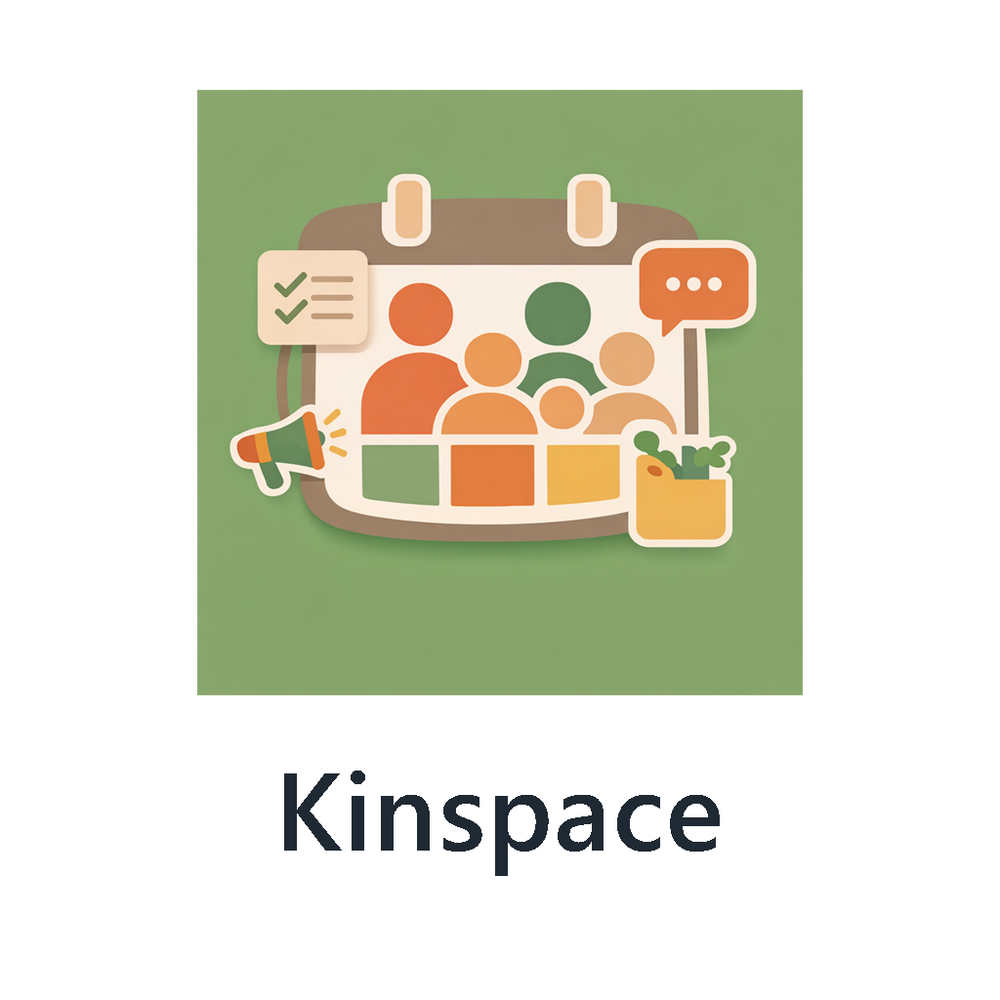

A simple tablet for routines, to-dos, timers, reminders, achievements, and family progress.
Good to know: initial setup adds everyone as a Member. You can manage people later in Settings.
See today's tasks, progress, and sections like Morning and Afternoon.
Jump back to the current day anytime with the Today button.
Use the floating + button to create a new task.
Tap a task to mark it done and update daily progress.
Helpful feature: when typing a task title, Kinspace suggests matching past task names so you can reuse them quickly.
Best first step: create your main recurring routines first, then fine-tune reminders later.
Reminder tip: category alarms are separate from task timers, so you can tune daily routine reminders without changing the task itself.
Recommended weekly habit: review reports once a week, then create a fresh backup.